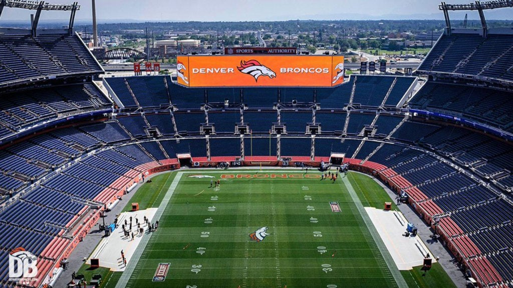

Denver Broncos Culture
The Denver Broncos have a rich and passionate fan culture that is deeply rooted in the city of Denver. The team's loyal supporters are known for their unwavering dedication and enthusiasm, creating an electric atmosphere at games.
One of the most iconic aspects of Broncos culture is the "Mile High Salute," where fans raise their arms in unison to show their support for the team. The Broncos' mascot, "Miles," is a beloved figure who entertains fans and adds to the festive atmosphere at games. Sports Authority Field at Mile High.
Broncos fans are known for their tailgating traditions, where they gather before games to enjoy food, drinks, and camaraderie. The team's colors, orange and blue, are proudly displayed by fans who wear jerseys, hats, and other merchandise to show their support.
The Traditions That Define the Denver Broncos
The Denver Broncos have always been more than a football team. Their history, their home field, and their fans created traditions that shaped what “Broncos Country” really means. From the design of the stadium to the culture in the parking lot on game day, these traditions bring the past forward and keep the spirit of the team alive.
The South Stands are a tradition all by themselves. Back at Mile High Stadium, that section made life miserable for visiting teams. Sitting right above the visitors' locker room, Broncos fans created a wall of noise you could feel more than hear. Today, that same energy lives on at Sports Authority Field at Mile High, carrying the reputation of Denver fans, they are loyal, loud, and fully committed.
If you've ever been inside the stadium when things get loud, you know all about Rocky Mountain Thunder. The steep seating and 13,500 tons of steel allow fans to recreate a metal roar that came from the old stadium. It's a clamor that rattles your bones and reminds opponents exactly where they're playing.
Perched high above the entrance sits one of Denver's most recognizable icons Bucky. Modeled after Roy Rogers horse Trigger, this 1,600-pound, 27-foot statue has watched over the Broncos since 1975. After being restored, Bucky returned to his post in 2011 at the new stadium. Whether fans call him Bucky or Bucko, he's part of what makes Mile High feel like home.
The Denver Broncos Ring of Fame honors the greatest players, coaches, and contributors in team history. Located in the stadium, it serves as a tribute to the legends who have shaped the franchise.
The east side of the stadium blends into the landscape of the South Platte River. The design uses native grasses and a flowing layout to create an open, natural feel. Autumn Blaze Maples planted in rings form a public art project called “Pass Through the Land,” giving fans a unique entrance that is connected to Colorado's terrain, with a feel like a stadium in the park.
On the west side sits the Counties Gateway Plaza, a ceremonial entrance honoring the six counties that helped fund the stadium's construction. Shade trees and monuments to each county make it a place that ties the community directly to the franchise.
Inside the stadium, the Noble Energy Sports Legends Mall celebrates the history of the Broncos with statues, memorabilia, and interactive exhibits. It's a place where fans can connect with the team's legacy and relive some of the most iconic moments in franchise history.
Outside the south end of the stadium, the Ring of Fame Plaza features 8-foot steel monuments honoring each inductee. Built from the same type of steel used in the original Mile High Stadium, these pillars connect today's fans to the team's long history. The plaza sits near the Broncos Fountain and the main scoreboard — the perfect spot to appreciate the franchise's legacy.
Denver Broncos Fan Tailgate Traditions
Broncos fans don't just show up for the game, they build their own traditions long before kickoff. Tailgating at Mile High is a culture of its own. One of the most famous tailgates happens in Lot C-4. Known for its strong sense of community and family atmosphere, the Mile High Tailgate has become a staple for fans who want to kick off game day the right way. From food and drinks to music and entertainment, tailgating outside the stadium sets the tone. Some fans join the Broncos VIP Tailgate, while others keep it simple with a grill, some good company, and plenty of orange and blue.
Over the years, the Broncos have developed a loyal group of super fans who treat tailgating like an art. Their passion shows up in their costumes, traditions, setups, and all the ways they bring excitement to game day.
The Mile High Jester
You can't talk about Broncos tailgates without mentioning the Mile High fan Shane Hergenreder AKA Jester. As the leader of the Mile High Tailgate, he's a crowd favorite. Since the 2015 playoffs, he's been known for climbing atop his RV and waving a fleet of Broncos flags, letting everyone know the party has begun.
His tailgate is packed with energy, JELL-O shots, laughs, and a strong sense of Broncos pride. With his 2013 Tailgating Hall of Fame induction, the Jester proved this is more than a hobby, it's a tradition that brings people together. Inside the Mile High Jester's Tailgate Walk into the Mile High Jester's setup and you'll find: Tailgate Hall of Fame
- New Belgium Beers being passed around
- A beer pong table that stays busy
- Fans sharing football stories and predictions
- Music blasting as laud as the crowd
- People lining up for Jester Shooters with the Broncos Colors
A Culture Built by Fans, History, and Heart
From the stadium design to the noise of the South Stands, from the steel thunder under your feet to the tailgate culture that stretches back decades, the Denver Broncos traditions run deep. They tie the old Mile High to the new. They honor the legends who built the team. And they remind every fan, new or seasoned, that being part of Broncos Country means carrying forward a legacy built on pride, passion, and unshakable loyalty. These traditions aren't just part of game day, they're part of what makes the Broncos who they are.